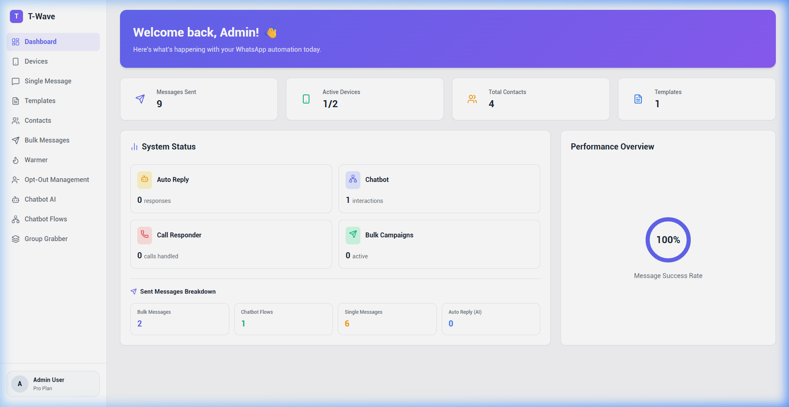
Dashboard Utama (Real-time)
Dasbor utama sistem yang menyajikan informasi statistik ringkas mengenai jumlah sesi terhubung, total kampanye aktif, pesan terkirim, serta status pemakaian memori dan kesehatan server secara *real-time*.
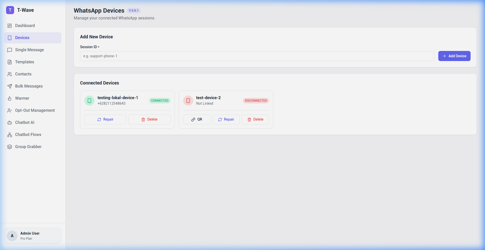
Devices & Session Management
Manajer multi-sesi untuk memindai QR code, memantau status koneksi WhatsApp secara *real-time*, menetapkan proxy khusus pada setiap akun, dan melakukan perbaikan sesi (*manual repair*) jika terjadi kendala dekripsi Signal.
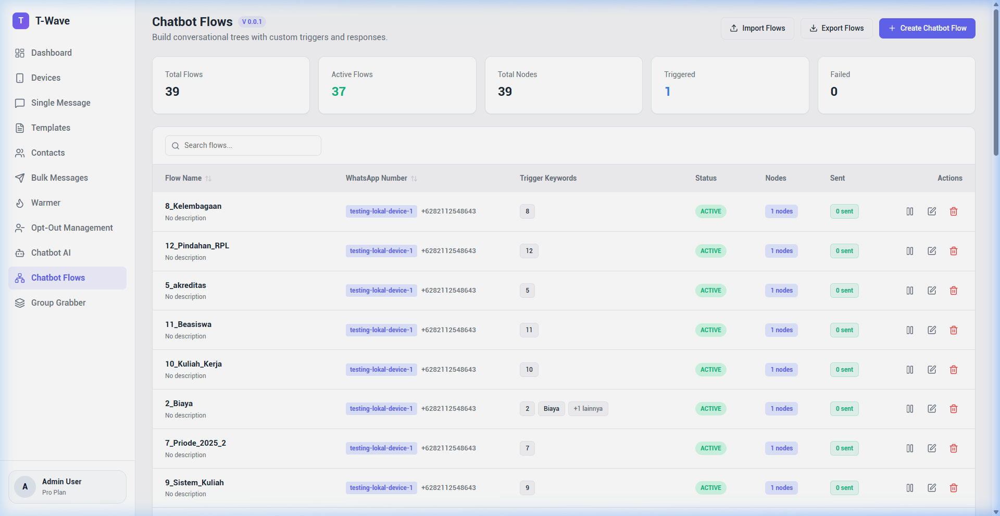
Chatbot Flow Builder & Delivery Metrics
Manajemen alur percakapan berbasis node-editor interaktif. Dilengkapi pelacakan metrik pengiriman detail per alur (Triggered, Sent, Failed) untuk mengukur kinerja respons pesan otomatis asinkron.
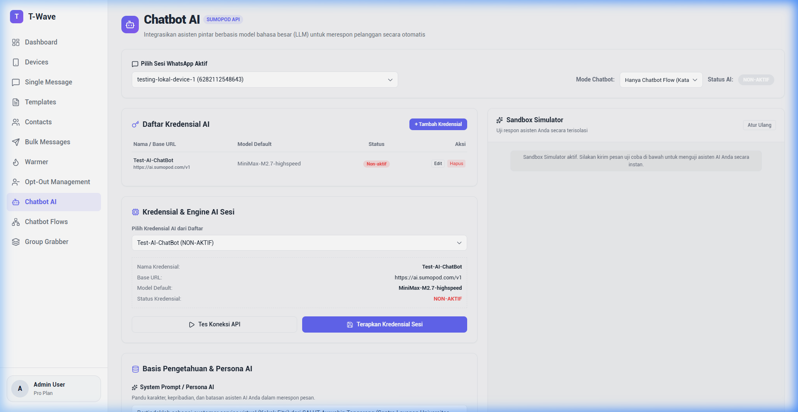
Chatbot AI Settings
Pengaturan integrasi LLM (ChatGPT/OpenAI) untuk respon percakapan otomatis cerdas. Menyediakan visual masking kunci API, konfigurasi sistem prompt kustom, pemilihan mode chatbot (Flow/AI/Keduanya), serta pembatasan otomatis hanya untuk chat personal (menghindari grup).
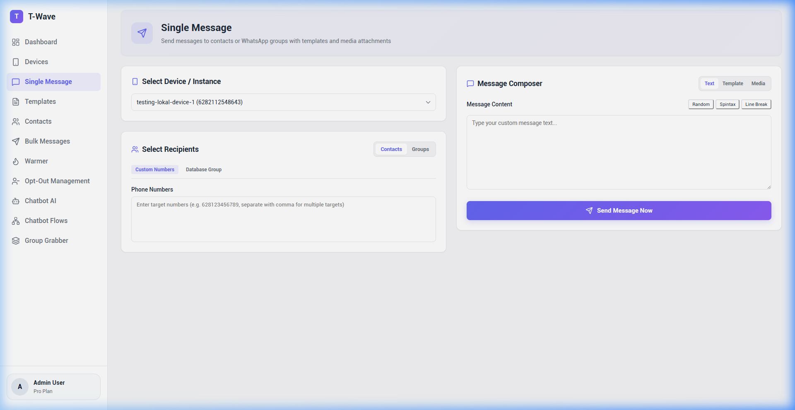
Single Message Composer
Komposer pesan instan untuk mengirimkan pesan WhatsApp ke nomor tujuan tunggal secara cepat. Mendukung pemilihan akun pengirim, pesan teks kaya format, serta unggah berkas media gambar maupun video.
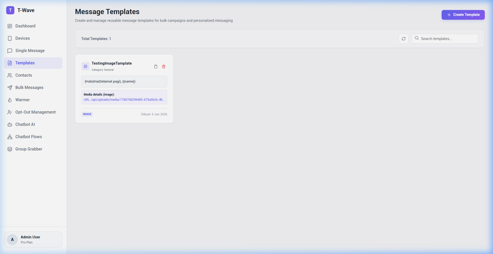
Message Templates
Daftar manajemen template pesan dinamis. Membantu admin menyusun draf pesan tetap dengan penampung variabel (placeholder) yang akan digantikan data kontak secara otomatis saat pengiriman massal.
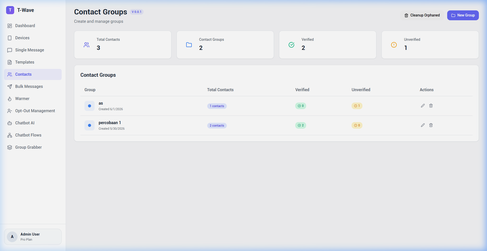
Contacts & CSV Import-Export
Manajemen buku alamat kontak untuk mengelompokkan nomor tujuan berdasarkan daftar atau kampanye tertentu. Menyediakan fitur impor massal via file CSV dan ekspor data kontak aktif.
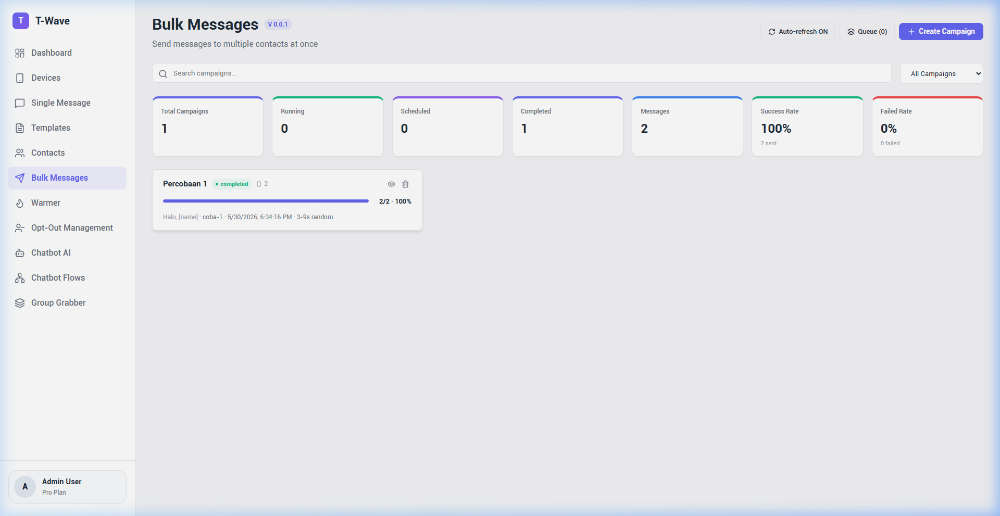
Bulk Messages Campaign
Mesin pengirim pesan massal dengan opsi penyebaran sesi pengirim, penyesuaian jeda waktu dinamis (*delay seconds*) untuk menghindari pemblokiran nomor, dan penjadwalan kampanye.
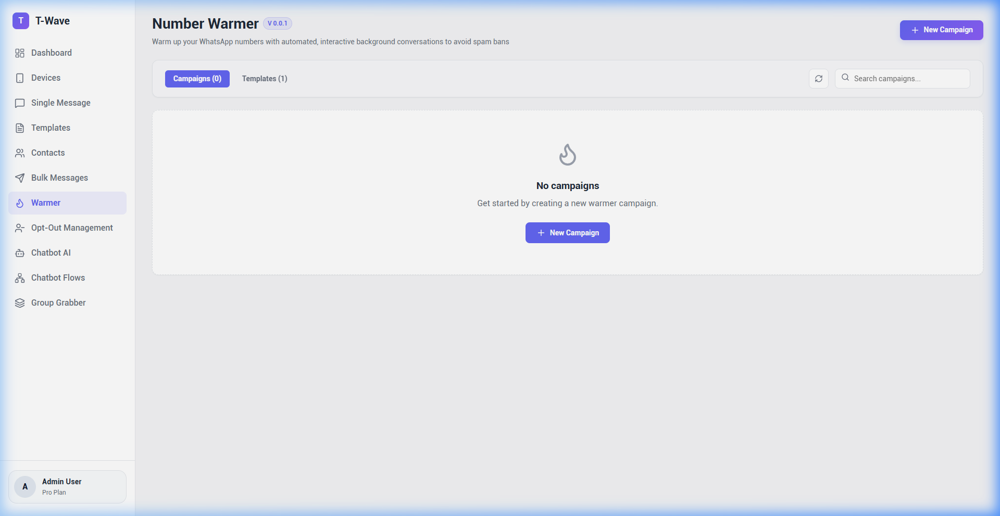
Account Warmer & Simulator
Simulator interaksi pesan antar nomor terafiliasi secara asinkron. Fitur ini berfungsi untuk menaikkan reputasi nomor baru melalui pengiriman pesan terjadwal berkelanjutan dengan kontrol *timer* start/stop otomatis.
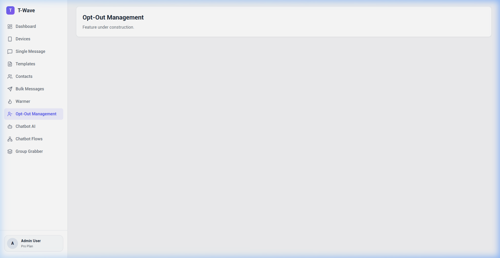
Opt-Out & Suppression Management
Daftar nomor telepon yang meminta dikecualikan dari kampanye massal (*opt-out*). Sistem akan menyaring kata kunci inbound seperti "STOP" atau "UNSUBSCRIBE" untuk memasukkan nomor ke daftar hitam secara otomatis.
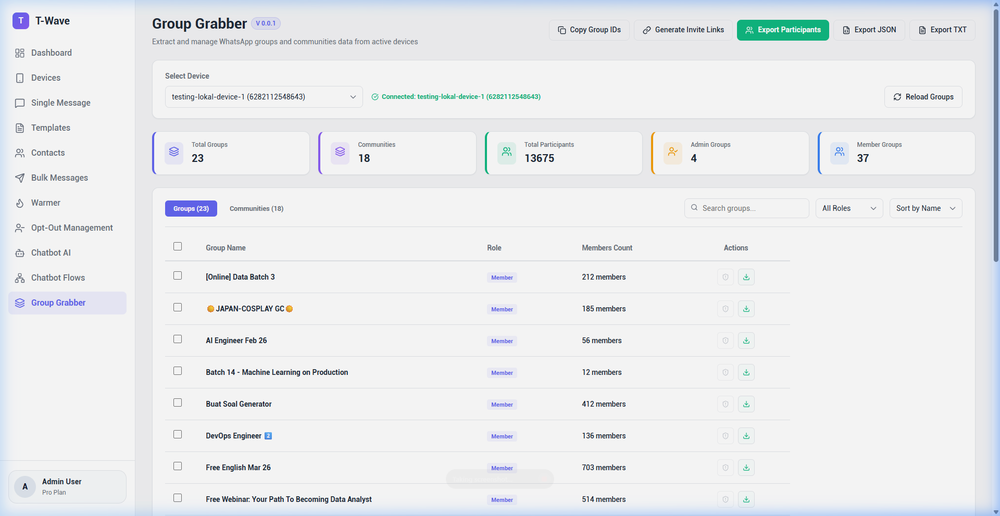
Group Participant Grabber
Pengekstrak peserta grup WhatsApp secara otomatis. Admin dapat memilih grup dari sesi mana pun yang terhubung, memuat daftar anggotanya, dan langsung mengekspor daftar nomor tersebut menjadi berkas CSV.
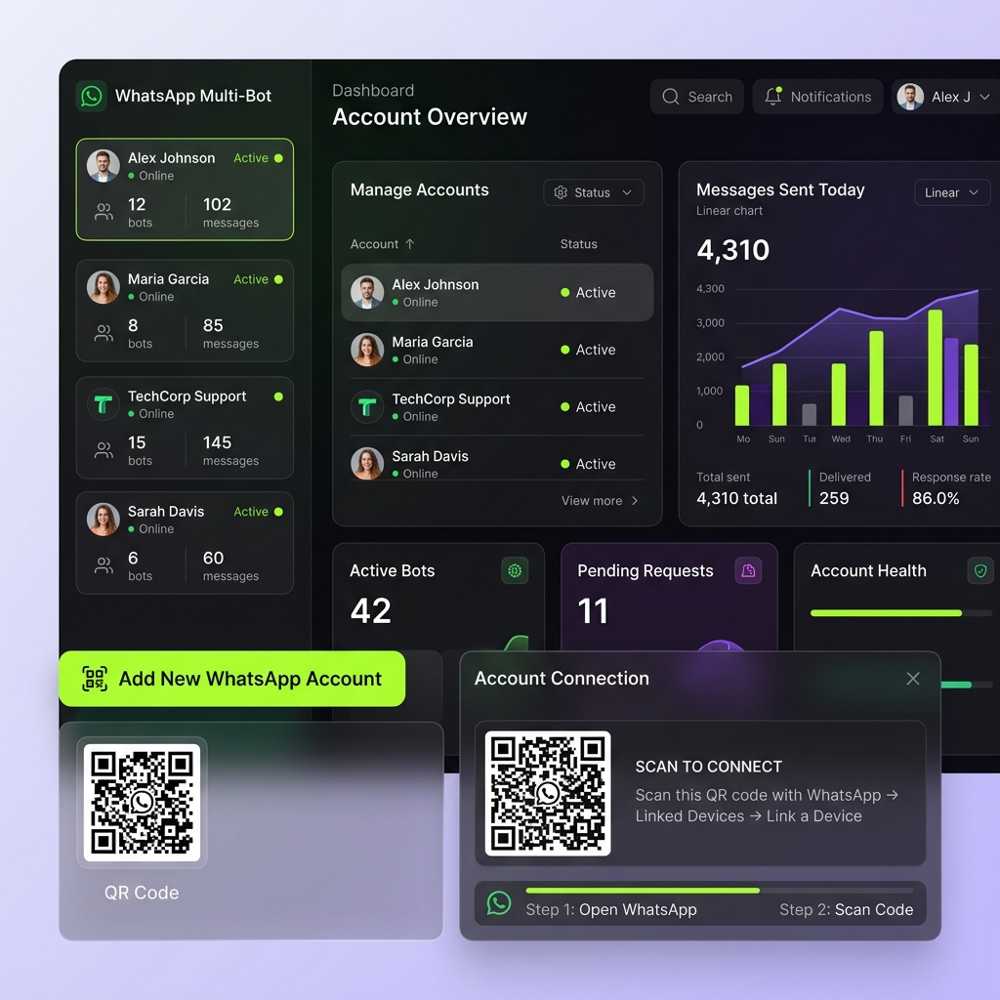
High-Fidelity Dashboard Mockup
Desain rencana antarmuka dashboard utama bertema gelap premium yang menyajikan statistik akumulatif pengiriman pesan massal, grafik lalu lintas pengiriman, dan status server internal.
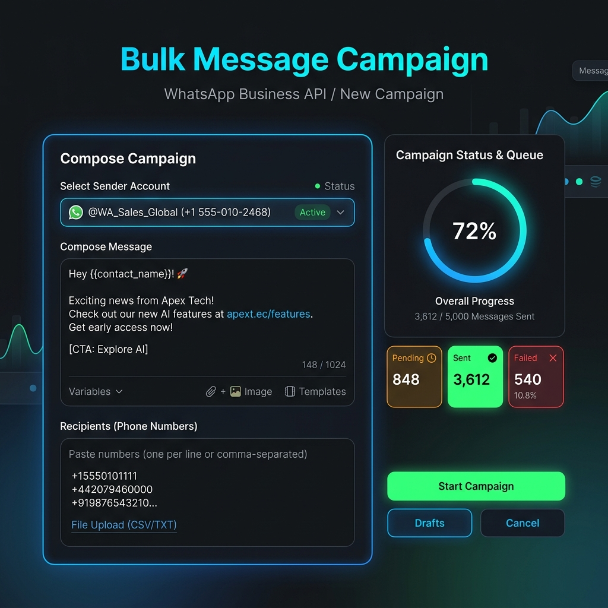
High-Fidelity Bulk Composer Mockup
Desain rencana antarmuka komposer pesan massal (*bulk message*) yang mendukung input template dinamis, pemilih berkas lampiran media, dan pemilihan multisesi pengirim secara bersamaan.